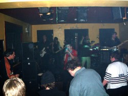
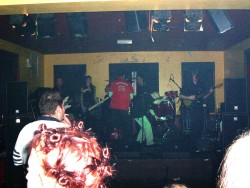
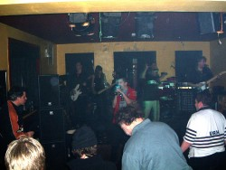
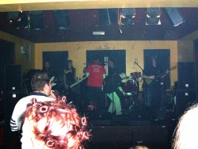
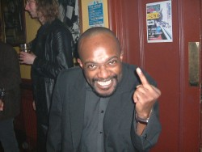

|
|
 |
 |
Gigs
::
2004
:: Feb13
|

Venue: The Rockin' Horse
Address: Abington Square
Where: Northampton England
When:
Sunday, Friday 13th, 2004
Played:
![[listen to Police Chief]](../../images/icons/iconMP3.gif) Police Chief Police Chief
Quality People
Istanbul Connection
Every Saturday Night
Play It All Night Long
Buffalo Sniper
Notes
8:00pm - The doors open and the Electric Gypsyland album goes on the stereo.
9:00pm - A Fat Dog Sound
9:45pm - Wilson
10:30pm - Good Cop Bad Cop
11:15pm - P-Hex
12:00 midnight - The Skank Sound System
1:00am - The bar is closing. Go home, you've had as much as you can handle.
The bands: P-Hex - Wilson - Good Cop Bad Cop - A Fat Dog Sound
Plus DJ: Skank Sound System
Doors: 8:00pm
Admission: £5:00
A couple of positive developments on the Romanian benefit at the Rockin' Horse.
First off, the bar will be open late. (Notice how this is becoming something of a trend
at Wilson's Northampton performances? This town is on the move, subtly shapeshifting
into the new Barcelona. Oi, New Yorkers - you can smoke in the pubs here. Ha! Ha! Ha!
Ha! Ha! Ha! Ooooh-Ho! Ho! Ho! Security!)
Second off, because there is more time, we're adding another band to the bill, namely
the very fine young band called
A Fat Dog Sound.
So for your fiver you now get 4 top groups, a magisterial DJ and a late bar.
Beats Live Aid.
 



Photos: Paul Blinkhorn

Photos: John Gilfillan
Headstone Says..
Well, the Romanian benefit at the Racehorse passed off well. It was a warm and friendly night out, with
an awful lot of faces rallying round to raise money for the Fred Ryan's guerilla hospice-building
operation and the Lovelight Romanian Children's Project. There was even a raffle!
(Prizes included
quality cigars from Switzerland airport.) All the bands played well, with Good Cop Bad Cop being
particularly fantastic, like an enormous truck coming at you at about thirty million miles an hour.
Awesome shit. After P-Hex's riotous set, Andy Skank rocked the house until the small hours. The night
raised something in the region of £800 for the hospice. We await the second leg, at the Wyeside Centre
in Builth Wells, with keen anticipation.
(There is film of this shit, as, indeed, there is of a lot of Wilson performances. We're going to try
and get some of this to the site before too long. But this one is particularly scary, coz E-Man
is centre stage. Eek! How did that occur?)
|
Visitors' comments for this page
|
young man
admirer
- Npton
17Apr2004 1:56 AM
(20 years 97 days ago)
who is that lovely young man with John Gilf? nice cheek bones
|
|
|


{kind=link}
{kind=link}
{kind=link}
{kind=link}
{kind=link}
{kind=link}
{kind=link}
{kind=link}
{kind=link}
{kind=link}
{kind=link}
{kind=link}
{kind=link}
{kind=link}
{kind=link}